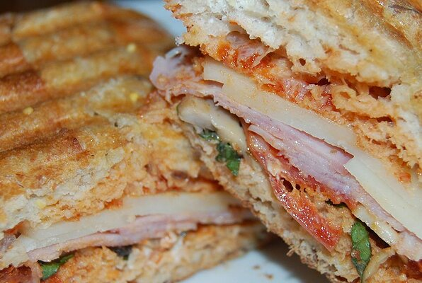

Home
Pizza

Pizza (Italian: [ˈpittsa], Neapolitan: [ˈpittsə]) is a dish of Italian origin consisting of a usually round, flattened base of leavened wheat-based dough topped with tomatoes, cheese, and often various other ingredients (such as anchovies, mushrooms, onions, olives, pineapple, meat, etc.), which is then baked at a high temperature, traditionally in a wood-fired oven.[1] A small pizza is sometimes called a pizzetta. A person who makes pizza is known as a pizzaiolo.
Ingredients
- 1 teaspoon butter
- 2 tablespoons sliced fresh mushrooms
- 1/2 cup tomato sauce
- 4 ciabatta rolls, split
- 2 cloves garlic, minced
- 1 tablespoon dried oregano
- 8 slices hot Genoa salami
- 8 slices roasted ham
- 2 tablespoons diced red onion
- 2 tablespoons chopped roasted red pepper
- 2 tablespoons chopped black olives
- 4 leaves basil, chopped
- 4 slices provolone cheese
Steps
- Melt butter in a small skillet over medium-high heat; add mushrooms and saute until tender, 5 to 7 minutes. Remove from heat to cool.
- Preheat a panini press according to manufacturer's instructions.
- Spread an even layer of tomato sauce onto the cut sides of each ciabatta roll. Sprinkle equal amounts of garlic and oregano onto each roll. Place 2 salami slices side by side onto each roll; top each with 2 slices ham. Divide red onion, mushrooms, red pepper, olives, and basil between the 4 sandwiches and spread evenly atop the meats. Finish by topping with provolone cheese and sandwiching roll halves around the fillings.
- Cook sandwiches on preheated panini press until there are dark brown grill marks on the bread, the cheese is melted, and the center is warm, about 5 minutes.